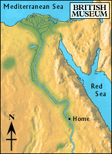

Oasis

After another day of walking, the boy sighted a patch of green in the distance. It was hot, and the sun was bright in the clear, blue sky. He hoped that the stream which fed the oasis would be flowing freely.
When he reached the oasis, he saw green plants and a small pool of water. It was a miracle that there was water in the middle of the desert.
The boy filled his water pouch and sat beneath a large palm tree, enjoying its shade.
After several days of resting, the boy decided to leave. A local woman told him there was a quarry further south where a group of workers had gone for sandstone.
Should he head towards the quarry, or back towards the Nile?